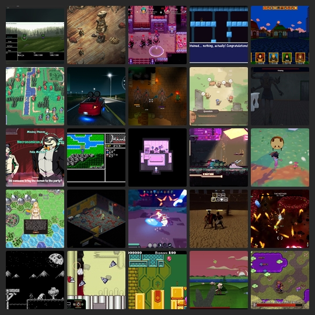

BlueSky Quick Recap #indiedev 2025-10-01
Show Only Saved Posts
Saved Post Num:
---
<< Previous
Home
Next >>

Time Range:
01 Oct 2025
Total Number of Post: 826+
Number of Post Displayed: 33
Post Selection Guidelines
<< Previous
Home
Next >>